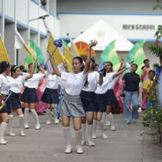
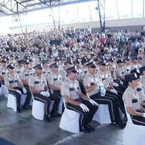

Life Around the Campus
These photos show snapshots of gatherings and activities shared by the college community.


Celebrating student participation, school gatherings, and moments from the KCC community.
These photos show snapshots of gatherings and activities shared by the college community.


For confirmed event dates, registration details, venue changes, and announcements, check the college's official communication channels or contact the school.
Contact KCC